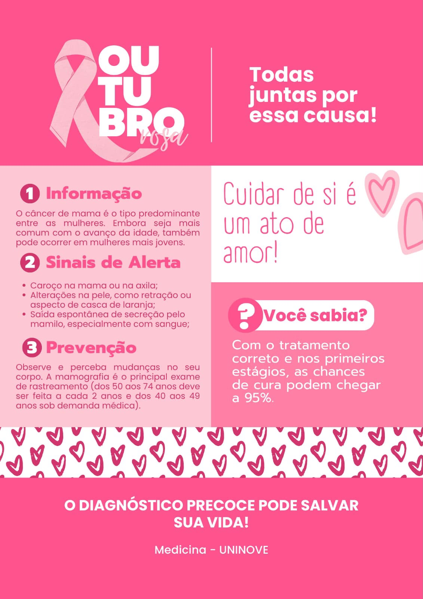

1Informação
O câncer de mama é o tipo predominante entre as mulheres. Embora seja mais comum com o avanço da idade, também pode ocorrer em mulheres mais jovens.
2Sinais de Alerta
- Caroço na mama ou na axila;
- Alterações na pele, como retração ou aspecto de casca de laranja;
- Saída espontânea de secreção pelo mamilo, especialmente com sangue;
3Prevenção
Observe e perceba mudanças no seu corpo. A mamografia é o principal exame de rastreamento (dos 50 aos 74 anos deve ser feita a cada 2 anos e dos 40 aos 49 anos sob demanda médica).
Cuidar de si é
um ato de
amor!
Você sabia?
Com o tratamento correto e nos primeiros estágios, as chances de cura podem chegar a 95%.